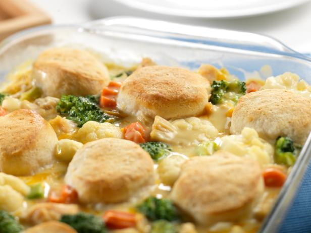

Chicken and Biscuits Recipe

This is a recipe for Chicken and Biscuits
Ingredients:
- 1 cup onion, chopped
- 1 cup potato, diced (do not need to be peeled)
- 1 cup celery, diced
- 1 cup carrot, peeled & diced
- 1/3 cup melted margarine
- 1/2 cup flour
- 2 cups chicken broth
- 1/2 cup pareve creamer
- 1/4 teaspoon ground black pepper
- 4 cups chicken, cooked and chopped (usually seasoned boneless chicken breasts)
- 1-2 cups frozen green beans (thawed)
Ingredients for Biscuits:
- 2 cups flour
- 1 tablespoon baking powder
- 1 teaspoon salt
- 4 tablespoons chopped chives (fresh if possible) (optional)
- 1/4 cup margarine
- 1 large egg, beaten
- 1/2 cup pareve creamer, or soy milk
Directions:
- Prehead oven to 400 degrees
- Saute onion, celery, carrots, and potatoes in margarine for 10 minutes
- Add flour to sauteed mixture, stirring well. Cook one minute, stirring constantly
- Combine broth and creamer, and gradually stir into vegetable mixture
- Cook over medium heat, stirring until thickened and bubbly
- Spoon biscuit dough in large spoonfulls over top the chicken mixture (Note, usually end with with 5 x 3 in a 9" x 13" pan)
- Bake for 20 minutes, or until the biscuits are golden brown
Directions for Biscuits:
- Whisk flour, baking powder, salt, and chives in a large bowl
- Using your finger tips (or the dough tool), rub margarine into dry ingredients until the mixture looks like crumbs. Do so fast to avoid fats melting
- Add egg and soy milk/creamer
- Stir vigorously with a wooden spoon (any spoon will do in a pinch, but wood avoids sticking!) until mixture comes together